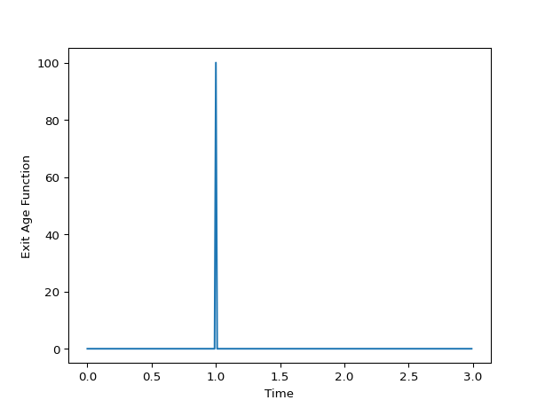

Plug Flow Reactor¶
-
class
rtdpy.pfr.Pfr(tau, dt, time_end)[source]¶ Bases:
rtdpy.rtd.RTDCreate Plug Flow Reactor (PFR) Residence Time Distribution (RTD) model. [1]
\[E(t) = \delta\left(t-\tau\right)\]Parameters: - tau : scalar
Mean residence time of PFR.
tau>0- dt : scalar
Time step for RTD.
dt>0- time_end : scalar
End time for RTD.
time_end>0
References
[1] (1, 2) Levenspiel O. (1999) “Chemical Reaction Engineering: Third Edition” John Wiley & Sons, Inc. Examples
>>> import matplotlib.pyplot as plt >>> import rtdpy >>> a = rtdpy.Pfr(tau=1, dt=.01, time_end=3) >>> plt.plot(a.time, a.exitage) >>> plt.xlabel('Time') >>> plt.ylabel('Exit Age Function') >>> plt.show()
-
dt¶ Time step for RTD
-
exitage¶ Exit age distribution for RTD
-
exitage_norm¶ Normalized Exit Age Distribtion for RTD
-
frequencyresponse(omegas)¶ Parameters: - omegas : ndarray
frequencies at which to evaluate magnitude response
Returns: - magnitude : ndarray
frequency magnitude response at omegas
-
funnelplot(times, disturbances)¶ Return maximum output signal due to square disturbances.
Also returns meshgrid for times and disturbance inputs for ease of plotting.
Parameters: - times : array_like, size m
Times to determine funnelplot
- disturbances : array_like, size n
Disturbance magnitudes
Returns: - x : 2D meshgrid size (mxn)
times
- y : 2D meshgrid size (mxn)
disturbances
- response : 2D meshgrid size (mxn)
maximum response at (x,y)
-
integral()¶ Integral of RTD
-
mrt()¶ Mean residence time of RTD
-
output(inputtime, inputsignal)¶ Convolves input signal with RTD
Parameters: - inputtime : ndarray
Times of input signal, which must have same dt as RTD. Size m
- inputsignal : ndarray
Input signal. Size n
Returns: - outputsignal : ndarrary
Output signal at same dt. Size m + n -1
-
sigma()¶ Variance of RTD
-
stepresponse¶ Step respose of RTD
-
stepresponse_norm¶ Step respose of RTD
-
tau¶
-
time¶ Time points for exitage function
-
time_end¶ Last time point for RTD